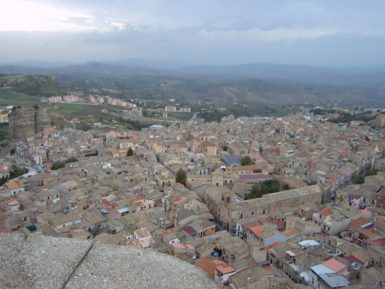
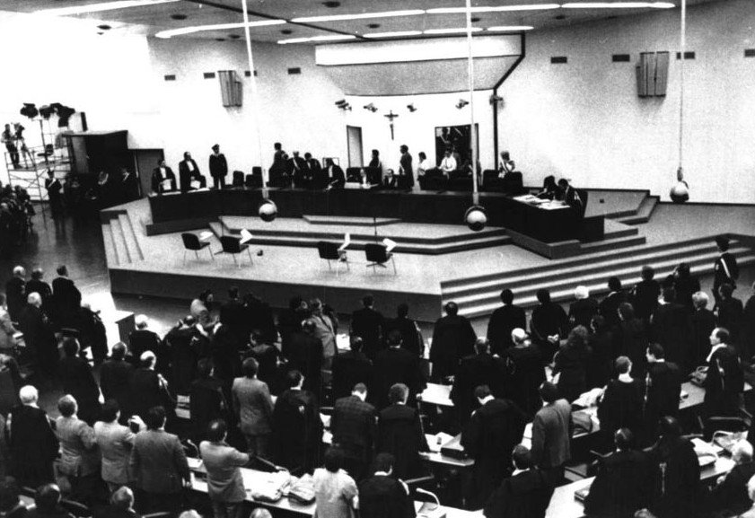
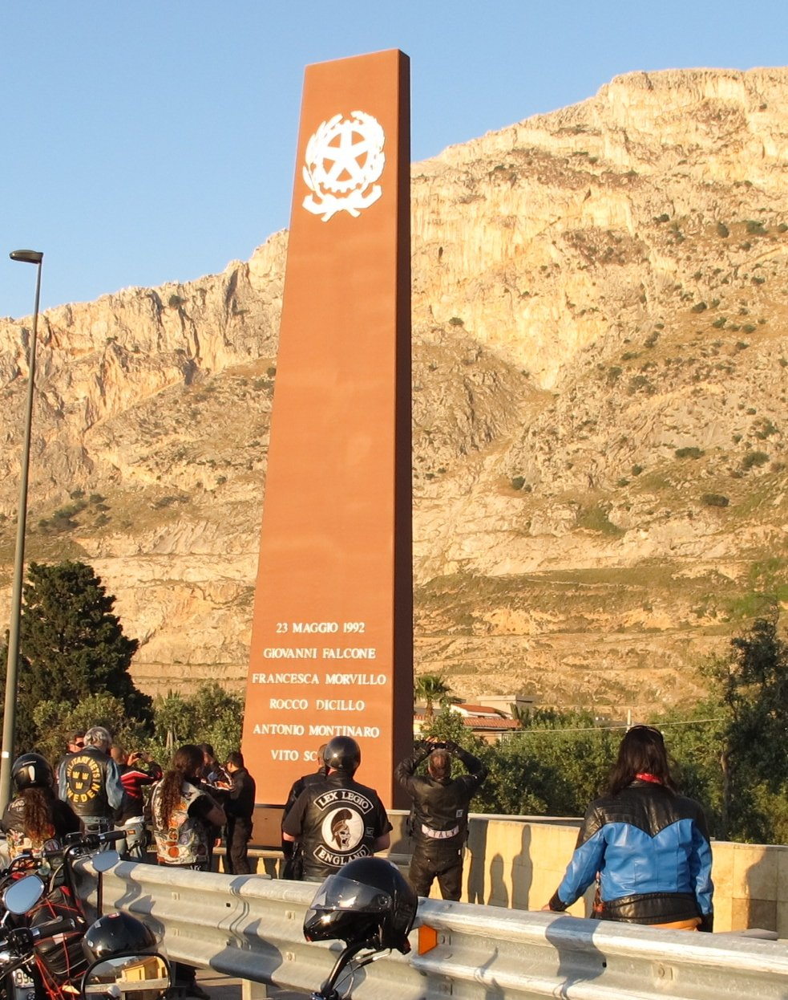

Savvy Security LLC · Research White Paper
The Trust Problem
What a Century of Cosa Nostra Research Tells Us About Cybercriminal Organizations
The initiation rituals, the coded slips of paper, the symbolic corpses, the ten-point behavioral code — these are not folklore. Read correctly, they are an identity-proofing, access-control, communications-security, and insider-threat program, engineered under adversarial pressure and refined by selection.
Security teams reach for mafia metaphors constantly — “ransomware cartel,” “cybercrime syndicate,” “the mob of the internet” — and almost always get the analogy backwards. The comparison is usually made on the basis of violence, hierarchy, or menace. Those are the least transferable features.
What actually transfers is the trust problem.
Every criminal organization faces the same structural bind: it must sustain cooperation among people who cannot use contracts, cannot go to court, cannot verify identity, and cannot safely disclose information. Sicilian Cosa Nostra spent roughly a century engineering solutions to that bind. Cybercriminal organizations face an intensified version of the same bind — more anonymity, no recourse to violence. The scholarly literature on darknet markets and ransomware groups has converged, independently, on the same theoretical framework used to explain the mafia: costly-signaling theory. Escrow, vouching, seniority, and reputation scores in a cybercrime forum are performing the function that the burning saint card performed in a Palermo back room.
This paper argues three things:
- The correct analytical unit is the trust mechanism, not the org chart. Comparing Conti's hierarchy to a Gambino crew is a parlor trick. Comparing how each solved partner authentication is a threat model.
- Cosa Nostra is the wrong headline actor for “global reach.” The evidence points to the Calabrian 'Ndrangheta as the transnational player; Cosa Nostra is in measurable decline. Getting this right protects your credibility.
- Trust infrastructure is an attack surface. Law enforcement's most productive recent operations have targeted trust layers — encrypted-phone platforms, escrow, reputation — rather than perpetrators directly. This is a directly applicable lesson for defensive strategy.

A note on the symbol above: the Trinacria is the official emblem of the autonomous Region of Sicily — a winged Medusa head with three running legs, representing the island's three points. It is a public regional and cultural symbol, not a Cosa Nostra emblem, and it predates the organization by roughly two and a half thousand years. It appears here to mark the island this history comes from, not the organization itself.
Part 1Correcting the Frame — Mafia Is Not Cartel
The foundational text is Diego Gambetta's The Sicilian Mafia: The Business of Private Protection (1993). Its thesis reorganized the field: the mafia is not primarily a producer or trafficker. It is a firm that sells protection and dispute resolution in markets where the state does not reliably supply either.
Gambetta locates the origin in a specific historical moment — post-feudal Sicily's abrupt transition to a market economy, which created property rights the state could not defend, alongside a supply of men trained in violence who could. Demand met supply, and an industry formed.
Federico Varese extended this into a general theory (The Russian Mafia, 2001; Mafias on the Move, 2011): mafias emerge where a rapid market transition outruns legal infrastructure, and where a labor pool skilled in coercion exists. Varese's more important finding for our purposes is the negative one — most attempts at mafia transplantation fail. They fail not because of policing but because there is no local demand for extra-legal governance. A mafioso in a jurisdiction with functioning courts is a man with a product nobody needs.
Why this matters for a security audience
The governance-versus-trade distinction maps cleanly onto threat modeling.
| Governance actor | Trade actor | |
|---|---|---|
| Core product | Protection, enforcement, dispute resolution | Goods and services |
| Requires | Territory, reputation, credible violence | Logistics, market access |
| Cyber analogue | Forum administrators, escrow operators, RaaS program operators, encrypted-platform providers | Initial access brokers, malware developers, mule networks, affiliates |
| Disruption target | Trust and legitimacy | Infrastructure and revenue |
Most defensive effort goes at trade actors. The governance layer is where the durable structure lives — and where, historically, the disruptions that actually mattered were aimed.
Calling any of this a “cartel” collapses the distinction and imports the wrong intuitions. Use “criminal network,” “syndicate,” or “ecosystem.” Reserve “cartel” for actual producer combinations.
Part 2The Architecture

Maurizio Catino's Mafia Organizations: The Visible Hand of Criminal Enterprise (2019) is the current standard reference for comparative organizational analysis of mafia groups, covering Cosa Nostra, the 'Ndrangheta, the Camorra, the American Cosa Nostra, the Triads, the Yakuza, and Russian organized crime. Catino's central claim is that mafias are neither bureaucratic corporations nor loose networks — they occupy a distinct organizational form, and the form predicts behavior.
Sicilian Cosa Nostra, structurally
- Famiglia / cosca — the base unit, controlling a defined territory, typically a town or an urban district.
- Picciotto / soldato (“man of honor”) — the initiated member who executes operational orders.
- Capodecina (“head of ten”) — supervises a crew, in practice anywhere from roughly five to thirty soldiers depending on family size.
- Rappresentante / capofamiglia — the boss, elected by the soldiers, who appoints a sottocapo (underboss) to act in his absence, and one or more consiglieri.
- Mandamento — a district grouping of roughly three neighboring families, headed by a capomandamento.
- Commissione / Cupola — the provincial coordinating body, composed of capimandamento.
Two features matter more than the chart itself.
First: election, not appointment. The boss is selected by the soldiers. This is a legitimacy mechanism, and it is why Cosa Nostra survived leadership decapitation for as long as it did.
Second: higher-level coordination bodies suppress internal violence. Catino's comparative finding is that mafias possessing coordinating bodies — Cosa Nostra historically, the 'Ndrangheta — contain internal conflict and channel coercion, while organizations without them (most Camorra clans) are fluid, polycentric, and far more violent internally. Governance capacity is inversely related to internal bloodshed. Disruption of the governance layer does not produce peace; it produces fragmentation and violence.
Network-analytic work on judicial-operation data (see, e.g., “Organizing Crime: An Empirical Analysis of the Sicilian Mafia,” arXiv:2205.02310, and “Network Structure and Resilience of Mafia Syndicates,” arXiv:1509.01608) has confirmed something counterintuitive and directly relevant to anyone doing threat-actor graph analysis: the most network-central node is frequently not the most senior figure. In the Perseo operation network, high centrality attached to a relative of the key agent rather than the key agent himself. Leadership insulates itself from communication volume. If you rank actors by degree centrality in a leaked chat corpus, you will find coordinators and quartermasters, not principals.
Part 3The Signs and Symbols, Read as Security Controls
This is the section your audience will remember. Each ritual element below has a documented function; each has a direct operational analogue.
3.1 The initiation — la punciuta (“the pricking”)
The ceremony has a stable documented structure across independent accounts, the earliest dating to 1877 in Sicily. A sponsoring member presents the candidate. The rules are recited. The candidate's finger is pricked and blood is dripped onto a devotional card — commonly an image of the Annunciation. The card is set alight and passed hand to hand as it burns while the candidate swears the oath. The formula recovered repeatedly in investigations: an oath of faithfulness to Cosa Nostra, with the burning image as the figure for the betrayer's own flesh.
Letizia Paoli (Mafia Brotherhoods, 2003) reads this as ritual kinship — the manufacture of fictive blood ties that override biological and civic ones. Gambetta reads it as signaling.
The signaling reading is the one that transfers. Gambetta's Codes of the Underworld (2009) formalizes what he calls the cost-discriminating condition: a signal authenticates a criminal type only if a rational impostor — an undercover officer, an informant, an opportunist — would find it too expensive to produce. Cheap talk fails. Vocabulary fails, because outsiders learn vocabulary. What works is a signal only a genuine member can afford to emit.
In the mafia context, the strongest such signal is a serious crime committed in front of witnesses, ideally homicide. It is perfectly discriminating precisely because the graver the offense, the less plausible it is that an infiltrator could commit it. Prison time works the same way: the cost of acquiring the credential is the credential.
The cyber analogue is exact. Cybercriminal forums have independently converged on the same architecture. The literature on darknet market trust — Yip et al. (2013), Décary-Hétu and colleagues, Laferrière and Décary-Hétu (2023) — divides signals into structural (escrow, review systems, vendor vetting before trading rights are granted) and user-generated (longevity, community participation, transaction history). A 2025 analysis of AlphaBay published in PLOS ONE found empirically that costly signals — verified seniority, positive reputation, escrow use — were associated with reduced fraud, while cheap signals — long, elaborate, positively-toned listing text — correlated with increased fraud.
It also explains the cold-start problem: a new account has no costly signal to emit and therefore cannot trade. This is why vouching systems, paid membership, and sponsorship requirements exist — they are the punciuta's structural descendants. It is also the single most exploitable feature of these ecosystems.
3.2 The Decalogue — written policy
In November 2007, following the arrest of Salvatore Lo Piccolo near Palermo, investigators recovered from his briefcase a typewritten sheet headed “Rights and Duties,” which the Italian press immediately called the mafia's ten commandments. Alongside it was a holy image bearing the initiation formula.
The rules, in substance:
- No member may introduce himself directly to another; a third party must make the introduction.
- Do not look at the wives of friends.
- Never be seen with police.
- Avoid bars and clubs.
- Availability to Cosa Nostra is absolute — even if your wife is in labor.
- Appointments must be kept.
- Wives are to be treated with respect.
- When asked for information, answer truthfully.
- Do not take money belonging to others or to other families.
- Ineligible: anyone with a close relative in law enforcement, anyone with an unfaithful relative, anyone of bad conduct.
Read this as a security policy and it decodes immediately:
- Rule 1 is a chain-of-trust requirement — no direct peer connection without an authenticated introducer. It is a web-of-trust model, and it prevents an infiltrator from cold-approaching the network.
- Rules 3, 4, and 10 are counterintelligence and personnel screening — reduce exposure to law enforcement, avoid environments with poor access control, and exclude candidates with conflicted allegiances. Rule 10 is a background check.
- Rules 6 and 8 are operational reliability requirements, enforcing predictability in a system that cannot tolerate ambiguity.
- Rules 2, 7, and 9 remove predictable internal conflict triggers. Most mafia wars start over women or money. This is threat modeling against insider disputes.
Note the skepticism some Italian analysts expressed at the time: the objection was not that the rules were wrong, but that writing them down at all violates the deeper rule. That objection is itself the interesting finding. Cosa Nostra's default is oral transmission — a documentation policy chosen for evidentiary reasons. Lo Piccolo carrying the document was a security failure, and it was treated as one.
3.3 Omertà — data loss prevention

Omertà is usually described as a code of silence. More precisely, it is a prohibition on disclosure to the state, enforced by threat of death and reinforced by the initiation oath's self-referential curse.
Its systemic importance is best demonstrated by what happened when it broke. Italy's protected-witness framework, formalized from 1991, converted pentiti testimony into the central mechanism of anti-mafia prosecution. Tommaso Buscetta's cooperation is the reason the organizational structure described in Part 2 is documented at all — before the mid-1980s, the prevailing scholarly view held the mafia to be a “method” or subculture rather than a formal organization with an initiation-gated membership.
The analogue is insider risk. The Conti leak of February 2022 — approximately 168,740 internal Jabber messages released by an infiltrator objecting to the group's political alignment — is the cybercrime-era Buscetta event. It is the reason the empirical literature in the next section exists.
Cosa Nostra's response to defection was to escalate the cost: reprisals against families, and — notoriously — the 1996 killing of Giuseppe Di Matteo, the eleven-year-old son of a cooperating witness, after 779 days of captivity. This is worth stating plainly rather than aestheticizing. The signaling logic and the atrocity are the same act.
3.4 Symbolic violence — the message layer
Mafia homicide is frequently communicative rather than merely eliminative. Forensic and criminological literature (see Pomara et al., “Lupara Bianca,” Legal Medicine, 2015) treats the manner of killing as carrying encoded content: a stone in the mouth for betrayal, a prickly-pear pad in the pocket for theft from the organization, mutilation to signal worthlessness. Incaprettamento — ritual ligature binding — is a recognizable signature form.
The inverse is lupara bianca (“white shotgun”): a killing engineered so the body is never found. Bodies were buried in remote country, set into construction concrete, or dissolved — the last widely used by the Corleonesi during the Second Mafia War of the early 1980s. Its dual function is evidence destruction and a denial of ritual closure to the victim's family, which is itself a message.
The relevant abstraction: violence is a broadcast channel with variable addressing. Some acts address rivals, some address the community, some address the state, and some — the disappearances — address by absence.
Ransomware operations have rebuilt this layer wholesale. A leak site is a public execution. Staged victim countdowns, tiered disclosure, and contacting a victim's customers or regulators are all addressed messages, aimed less at the current victim than at the next twenty. Understanding extortion communications as deterrence signaling directed at an audience of future victims rather than as pressure on the present one changes how a negotiation is read.
3.5 Pizzini — communications security
This is the section that will land hardest with a technical readership.
Bernardo Provenzano ran Cosa Nostra for years while a fugitive — he was at large for over four decades before his 2006 arrest — using handwritten notes called pizzini, hand-carried by couriers. His system, reconstructed from seized material, included:
- A total prohibition on telephony. Not minimized. Prohibited. An air gap enforced as policy.
- Enciphered identifiers. Provenzano used a Caesar-style shift of three, then rendered letters as their alphabet positions — producing strings such as “512151522” for a name. Cryptographically trivial, and largely beside the point: the cipher only needed to defeat a courier's casual reading and to slow analysis of intercepted material, not to resist a state cryptanalyst.
- Envelope/payload separation. Notes were folded so that a blank margin formed a wrapper bearing only the recipient's code, then sealed with transparent tape — the carrier could route the message without reading it. This is addressing metadata separated from content, implemented in paper.
- Codebook indirection. Numeric references pointed to contact lists and to scriptural passages, so the note alone was insufficient to reconstruct meaning.
- Dead drops. Matteo Messina Denaro, at large from 1993 until his capture in January 2023, used notes wadded, taped, and buried in soil or hidden under boulders on remote sheep ranches, retrieved by intermediaries.
- Mandatory destruction after reading.
Set against the modern alternative, the design logic is sharp. Provenzano's cipher was weak and his tradecraft was strong, and the tradecraft is what kept him free. The organizations that adopted purpose-built encrypted handsets made the opposite bet — strong cryptography, centralized infrastructure — and it failed catastrophically. The takedowns of EncroChat (2020), Sky ECC (2021), and the FBI-operated ANOM platform produced tens of millions of intercepted messages, thousands of arrests, and asset freezes approaching €900 million across Europe. Prosecutors in Bosnia and Herzegovina alone opened 30 investigations against 170 suspects on Sky ECC material between 2021 and 2024.
Italian mafia groups have since partially converged on the middle path. The February 2025 Palermo operation — 183 warrants, roughly 1,200 carabinieri deployed, described in Italian reporting as the largest action against Cosa Nostra since 1984 — found bosses using micro-SIMs and encrypted handsets smuggled into prison cells to issue orders outside. The investigation was explicitly framed as a response to the organization's adoption of encrypted communications, and documented an attempted reconstitution of the provincial commission, which had previously been dismantled by the December 2018 arrests of Settimo Mineo and forty-five others.
Part 4The Cyber Mirror — What the Conti Corpus Shows
The theoretical debate in cybercrime criminology ran for a decade on thin evidence. Lusthaus (2013) argued that cybercriminal groups largely fail the classic organized-crime test: they lack extra-legal governance, territorial control, and a violence monopoly. Others countered that this applies a definition drawn narrowly from prototypical mafia groups.
The Conti leak supplied ground truth. Multiple independent teams have now analyzed the corpus:
- Paternoster et al., “Inside the leak: Exploring the structure of the Conti ransomware group,” Global Crime (2025) — social network analysis plus qualitative content analysis of 168,740 messages, finding a hierarchical structure resembling a legitimate business, with identifiable leadership roles and clear task specialization.
- A companion Global Crime study (2025) mapping organizational units, functions, roles, and directed communication patterns, finding that leadership coordinated across technical, operational, and HR domains while task-oriented departments showed dense intra-departmental communication.
- “Organizational anatomy of cybercrime: a multilayer framework,” Journal of Cybersecurity 12(1), which quantifies hierarchy via network centrality clustering and specialization via textual embedding similarity, and measures explicit rule and norm invocation using institutional grammar methods.
- Independent tracing work identifying over $80 million in likely ransom payments to Conti and its predecessor — roughly five times prior public estimates.
Conti had management, finance, and human resources functions, performance review, and — reported from the translated material — an employee-of-the-month practice.
Where the analogy holds
| Cosa Nostra mechanism | Cybercriminal equivalent | Function |
|---|---|---|
| Punciuta (sponsored, costly initiation) | Vouching, paid membership, vendor vetting | Identity proofing against infiltrators |
| Sponsor requirement (Decalogue rule 1) | Referral-gated forum access | Chain of trust |
| Decalogue rules 3, 4, 10 | OPSEC rules, affiliate vetting, region exclusions | Counterintelligence, personnel screening |
| Omertà | Non-disclosure norms, compartmentalization | Data loss prevention |
| Prison time as credential | Account longevity, transaction history, seniority | Non-forgeable reputation |
| Capodecina | Affiliate manager / team lead | Span-of-control limits |
| Commissione | Forum administration, RaaS program operator | Dispute resolution, market governance |
| Symbolic homicide | Leak sites, doxing, staged disclosure | Deterrence signaling to future targets |
| Pizzini | Out-of-band comms, dead drops, ephemeral messaging | Communications security |
Where it breaks — and this belongs in your article
Intellectual honesty strengthens the piece. Three real disanalogies:
- No territorial governance. Cosa Nostra's core product is protection over a physical territory. Ransomware groups sell nothing to anyone; extortion without a protection offer is predation, not governance. The forum administrators are the closest analogue, and they govern platforms, not places.
- No violence monopoly. Enforcement online runs on exclusion and reputation destruction, not physical coercion. This is a weaker instrument, and it is why cybercriminal cooperation is more brittle and rotates faster.
- Membership is not a lifetime status. The punciuta is irrevocable. A forum handle is disposable. This changes the entire incentive structure around defection.
Two qualifiers keep the disanalogy honest in the other direction. Lusthaus and Varese's “Offline and Local” (Policing, 2021) documents that cybercrime has a substantial physical, geographically-clustered dimension that the anonymity framing obscures. And Europol's EU-SOCTA 2025 explicitly flags “violence-as-a-service” — the outsourced-coercion market — alongside criminal networks functioning as proxies for hybrid state-aligned threat actors. The violence gap is narrowing from the digital side.
Part 5Global Theater — the Correction That Will Make Your Article Credible
Cosa Nostra is not the global actor. Say so, and you will immediately outrank most security-industry writing on this subject.

The evidence for Cosa Nostra's decline is strong. Over roughly two decades, Italian law enforcement has arrested more than five thousand people connected to the organization at various levels. The February 2025 Palermo operation was framed by prosecutors not as a strike against a peak-strength adversary but as evidence of exhaustion — intercepts captured a Brancaccio-district boss conceding that the caliber of current mafiosi had fallen. Recruitment has shifted toward untrained youth receiving explicit “mafia lessons” in extortion and hierarchy from veterans. Extortion — pizzo — remains the primary revenue source, which is a marker of a governance actor confined to its home territory.
Varese's transplantation research explains why the international footprint is thinner than folklore suggests: transplantation usually fails. It succeeds only where a new or unregulated market — construction, waste, transport, catering, sectors with low entry barriers and low product differentiation — creates genuine local demand for extra-legal governance, and where no incumbent protection supplier already occupies the space.
The 'Ndrangheta is the actual global actor. Europol's Italian Organised Crime Threat Assessment places it among the most threatening organized crime groups worldwide, holding a dominant position in the European cocaine market on the strength of direct producer relationships, and pursuing a colonization strategy that replicates its home structures — 'ndrine and locali — abroad while keeping them subordinate to the Calabrian Crimine. Widely-cited Italian parliamentary estimates put its share of the European cocaine trade near 80%. The structural reason for the reversal is historical: Cosa Nostra chose heroin in the 1970s and went to war with the Italian state in the early 1990s; the 'Ndrangheta held cocaine and was positioned when the markets inverted.
The convergence cases — your strongest material
Operation Fontana-Almabahia (September 2021). A Europol-coordinated Spanish–Italian operation, run out of Tenerife, produced 106 arrests, 16 searches, and 118 frozen bank accounts. The group ran phishing, smishing, vishing, SIM swapping, and business email compromise, laundering over €10 million through shell companies and money mules, with proceeds reinvested into narcotics and arms. Europol described a pyramid structure with specialized roles: technical personnel building and running phishing infrastructure; recruiters and organizers managing money mules; and laundering specialists including cryptocurrency experts. Members were linked to Camorra, Nuvoletta, Casamonica, and Sacra Corona Unita. Victims spanned Italy, Ireland, Spain, Germany, Lithuania, and the UK.
The Antwerp/Rotterdam port intrusions (2011–2013). Documented in Europol's IOCTA 2014 as an early exemplar of traditional organized crime recruiting cyber specialists. Traffickers hired hackers to compromise container management systems at Belgian and Dutch terminals. The tradecraft was mundane and effective: spear-phishing attachments against port and shipping-company staff, plus physical intrusion to install hardware keyloggers — some concealed in modified hard-drive enclosures. With access to container PIN codes and location data, the group redirected and collected drug-laden containers before legitimate hauliers arrived. It was detected only when containers began disappearing.
Later OCCRP reporting (NarcoFiles, 2023) documented a Dutch operator selling port network access and container data to cocaine traffickers, in one case aided by a bribed Antwerp employee who inserted a malware-loaded USB into a port computer. A UK security consultant reviewing the technical details characterized it as low-skill work.
That last detail is the most important sentence in this paper for your audience. The capability gap between organized crime and defenders in critical logistics is not a sophistication gap. It is a basic-controls gap compounded by insider recruitment.
Part 6Defensive Implications
Six things a security leader can act on.
1. Model the trust layer explicitly. For any threat ecosystem you track, ask: how do participants authenticate each other? What is the costly signal? Who adjudicates disputes? That layer is more stable than infrastructure and more informative than IOCs. It is also where disruption compounds.
2. Attack signal reliability, not just infrastructure. This is already being proposed academically: research on stolen-data markets has recommended that law enforcement seed deceptive shops and forum posts transmitting mixed signals, degrading participants' ability to interpret trust cues — driving both buyers and sellers out of the market without requiring arrests. The strategic goal is to raise the cost of authentication until cooperation stops being worth it. If ambient signal reliability is degraded far enough, the market's own immune system rejects everyone.
3. Treat the cold-start problem as the chokepoint. New entrants are the ecosystem's structural weakness. They lack costly signals, so they are forced to over-emit cheap ones, and — per the AlphaBay findings — cheap signaling correlates with fraud. Ecosystems are most fragile at the point of admission.
4. Do not rank actors by communication volume. The Sicilian network studies found central nodes are not senior nodes; the Conti studies found leadership coordinating across units while operational teams communicated densely within them. Both patterns are visible in any leaked corpus. Degree centrality identifies coordinators. Cross-functional communication breadth identifies leadership.
5. Anticipate fragmentation, not peace, after a successful takedown. Catino's comparative finding — coordination bodies suppress internal violence — implies that removing a governance layer produces a more chaotic, less predictable, more aggressive successor environment. The post-LockBit and post-Conti ransomware landscapes are the working example. Plan for a noisier threat surface after a win, and be candid with executives that a takedown headline is not a risk reduction.
6. Audit the boring authorization primitives in your logistics and OT estate. Antwerp was PIN codes, phishing, and hardware keyloggers. It ran for two years. Ask where in your environment a single shared secret authorizes physical custody of an asset, and who among your staff or contractors is realistically recruitable.
Part 7The Angle, Stated Plainly
The rhetorical arc that supports it: open with the burning saint card and the AlphaBay escrow finding side by side. Establish that this is not metaphor but the same theory, empirically confirmed in both domains. Correct the cartel error and the Cosa-Nostra-as-global-power error to establish rigor. Walk the symbol-to-control mapping. Close on Antwerp — where a container PIN, a phishing email, and a bribed employee moved tons of cocaine through Europe's largest port for two years — and the uncomfortable conclusion that the sophistication gap is not the problem.
Sources
Sourcing note: Items marked ◆ were verified against retrieved source material during research for this paper. Items marked ◇ are standard references in the field cited within the retrieved literature; verify pagination and DOIs directly before publication. For a security audience, this two-tier disclosure is itself a credibility asset — it also models the epistemic hygiene the piece is arguing for.
Foundational theory
- ◇ Gambetta, D. (1993). The Sicilian Mafia: The Business of Private Protection. Harvard University Press.
- ◆ Gambetta, D. (2009). Codes of the Underworld: How Criminals Communicate. Princeton University Press. (Chapter 1, “Criminal Credentials,” on the cost-discriminating condition, is available as a publisher sample:
assets.press.princeton.edu/chapters/s9010.pdf) - ◇ Paoli, L. (2003). Mafia Brotherhoods: Organized Crime, Italian Style. Oxford University Press.
- ◇ Varese, F. (2001). The Russian Mafia: Private Protection in a New Market Economy. Oxford University Press.
- ◆ Varese, F. (2011). Mafias on the Move: How Organized Crime Conquers New Territories. Princeton University Press.
- ◆ Varese, F. (2020). “How Mafias Migrate: Transplantation, Functional Diversification, and Separation.” Crime and Justice, 49. Author copy:
federicovarese.com
Mafia organization
- ◆ Catino, M. (2014). “How Do Mafias Organize? Conflict and Violence in Three Mafia Organizations.” European Journal of Sociology, 55(2). Cambridge University Press.
- ◆ Catino, M. (2019). Mafia Organizations: The Visible Hand of Criminal Enterprise. Cambridge University Press.
- ◆ Catino, M. (2020). “Italian Organized Crime since 1950.” Crime and Justice, 49. DOI: 10.1086/707319
- ◆ Jacobs, J. B. (2020). “The Rise and Fall of Organized Crime in the United States.” Crime and Justice, 49. DOI: 10.1086/706895
- ◆ “Organizing Crime: An Empirical Analysis of the Sicilian Mafia.” arXiv:2205.02310
- ◆ “Network Structure and Resilience of Mafia Syndicates.” arXiv:1509.01608
- ◆ Pomara, C., et al. (2015). “'Lupara Bianca': A way to hide cadavers after Mafia homicides. A cemetery of Italian Mafia. A case study.” Legal Medicine. DOI: 10.1016/j.legalmed.2014.08.007
Cybercrime organization and trust
- ◆ Lusthaus, J. (2012). “Trust in the world of cybercrime.” Global Crime, 13(2), 71–94.
- ◆ Lusthaus, J. (2013). “How organised is organised cybercrime?” Global Crime, 14(1), 52–60. DOI: 10.1080/17440572.2012.759508
- ◇ Lusthaus, J. (2018). Industry of Anonymity: Inside the Business of Cybercrime. Harvard University Press.
- ◆ Lusthaus, J., & Varese, F. (2021). “Offline and Local: The Hidden Face of Cybercrime.” Policing, 15(1), 4–14.
- ◆ Lusthaus, J. (2025). “The Cybercrime Industry.” Harvard National Security Journal.
journals.law.harvard.edu/nsj - ◆ Yip, M., et al. (2013). “Trust Among Cybercriminals? Carding Forums, Uncertainty and Implications for Policing.” Policing and Society, 23(4), 516–539.
- ◆ Laferrière, D., & Décary-Hétu, D. (2023). “Examining the Uncharted Dark Web: Trust Signalling on Single Vendor Shops.” Deviant Behavior, 44(1), 37–56. DOI: 10.1080/01639625.2021.2011479
- ◆ “Signalling strategies and opportunistic behaviour: Insights from dark-net markets.” PLOS ONE (2025). DOI: 10.1371/journal.pone.0319794
- ◆ “Exploring trust signals and pathways on cybercrime-as-a-service markets: The case of remote access trojans.” Trends in Organized Crime (2026). DOI: 10.1007/s12117-026-09606-7
Ransomware group structure
- ◆ Paternoster, C., et al. (2025). “Inside the leak: Exploring the structure of the Conti ransomware group.” Global Crime. DOI: 10.1080/17440572.2025.2473350
- ◆ “The internal structure of ransomware criminal groups: an analysis of organisational units, functions, roles, and communication patterns within Conti.” Global Crime (2025). DOI: 10.1080/17440572.2025.2534387
- ◆ “Organizational anatomy of cybercrime: a multilayer framework for measuring criminal organization.” Journal of Cybersecurity, 12(1), tyag014.
- ◆ “Inside ransomware groups: An analysis of their origins, structures, dynamics and nature” (BlackCat/ALPHV, Conti, LockBit). Computers & Security (2025). DOI: 10.1016/j.cose.2025.104683
Encrypted communications and evidence
- ◆ “Pretty good privacy turning sour: using closed encrypted communications data to study organized crime.” Trends in Organized Crime (2026). DOI: 10.1007/s12117-026-09593-9
- ◆ “EncroChat and Sky ECC Data as Evidence in Criminal Proceedings in Light of the CJEU Decision.” European Criminal Law Review, 33(3).
- ◆ Balkan Investigative Reporting Network (2025). “Dark Secrets: How Encrypted Comms Boosted Organised Crime in the Balkans.”
Enforcement and open reporting
- ◆ Europol (2014). Internet Organised Crime Threat Assessment (IOCTA), Chapter 3.1, Crime-as-a-Service — Antwerp port case.
- ◆ Europol. Italian Organised Crime Threat Assessment.
europol.europa.eu - ◆ Europol (2025). EU Serious and Organised Crime Threat Assessment (EU-SOCTA 2025). Published 18 March 2025.
- ◆ Europol (September 2021). Operation Fontana-Almabahia press materials; contemporaneous reporting via The Record, BleepingComputer, SecurityWeek, The Register.
- ◆ OCCRP (2023). “Inside Job: How a Hacker Helped Cocaine Traffickers Infiltrate Europe's Biggest Ports,” NarcoFiles: The New Criminal Order.
- ◆ CBS News / AFP (11 February 2025). Palermo anti-mafia operation, 183 warrants.
- ◆ US Department of Justice, archived US Attorney press releases on La Cosa Nostra RICO prosecutions.
justice.gov
Open databases worth working directly
- Europol publications —
europol.europa.eu/publications-documents(SOCTA, IOCTA, threat assessments) - UNODC data portal —
dataunodc.un.org - Eurojust case reporting —
eurojust.europa.eu - Transcrime (Università Cattolica, Milan) — Italian organized crime datasets and mafia-presence indices
- OCCRP Aleph —
aleph.occrp.org(documents, corporate records, leaks) - Global Initiative Against Transnational Organized Crime — Global Organized Crime Index,
ocindex.net - DOJ / FBI press archives — LCN indictment and RICO records
- Italian DIA (Direzione Investigativa Antimafia) semi-annual reports —
interno.gov.it(Italian language; the richest primary structural material available openly)
Prepared for a cybersecurity readership. The organized-crime literature cited here is peer-reviewed criminology and sociology; enforcement claims are sourced to agency publications and contemporaneous reporting. Verify all DOIs and page ranges against publisher records before publication.
Malcolm R. Smith writes on operational security, criminal-organization structure, and threat intelligence for Savvy Security LLC.